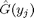
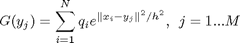
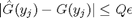
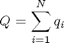

DataAdaptiveImprovedFastGaussTransform
Data Adaptive Improved Fast Gauss Transform.
Contents
Syntax
[G,T]=DataAdaptiveImprovedFastGaussTransform(d,N,M,X,h,q,Y,p_max,K,ClusterIndex,ClusterCenter,ClusterRadii,r,epsilon)
Description
Computes and approximation  to  such that  , where .
C++ Implementation.
Loads DataAdaptiveImprovedFastGaussTransform.dll
A new version of the IFGT where the parameters are chosen based on the acutal distribution of the source points. The truncation number for each source point is different and is chosen based on its distance to the cluster center.
Implementation based on:
Fast computation of sums of Gaussians in high dimensions. Vikas C. Raykar, C. Yang, R. Duraiswami, and N. Gumerov, CS-TR-4767, Department of computer science,University of Maryland, Collegepark.
Input
- d --> data dimensionality.
- N --> number of source points.
- M --> number of target points.
- X --> d x N matrix of N source points in d dimensions.
- h --> the source scale or bandwidth.
- q --> 1 x N vector of the source strengths.
- Y --> d x M matrix of M target points in d dimensions.
- p_max --> maximum truncation number for the Taylor series.
- K --> the number of clusters.
- ClusterIndex --> 1 X N vector the i th element is the cluster number to which the i th point belongs. [ ClusterIndex[i] varies between 0 to K-1. ]
- ClusterCenter --> d x K matrix of K cluster centers.
- ClusterRadii --> 1 x K matrix of the radius of each cluster.
- r --> cutoff radius
- epsilon --> desired error
Ouput
- G --> 1 x M vector of the Gauss Transform evaluated at each target point.
- T --> 1 x N vector truncation number used for each source.
Signature
- Author: Vikas Chandrakant Raykar
- E-Mail: vikas@cs.umd.edu
- Date: 15 July 2005
See also
ImprovedFastGaussTransformChooseParameters, ImprovedFastGaussTransformChooseTruncationNumber, KCenterClustering, example